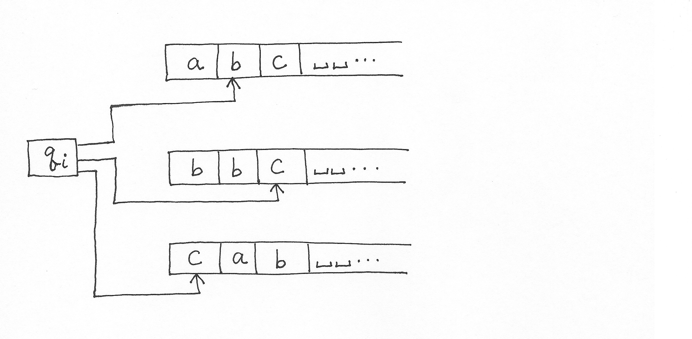
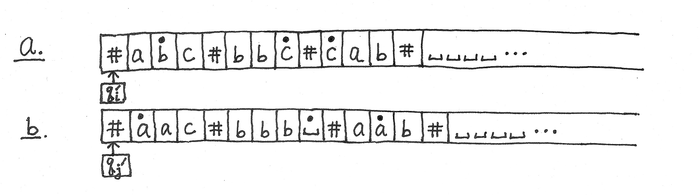
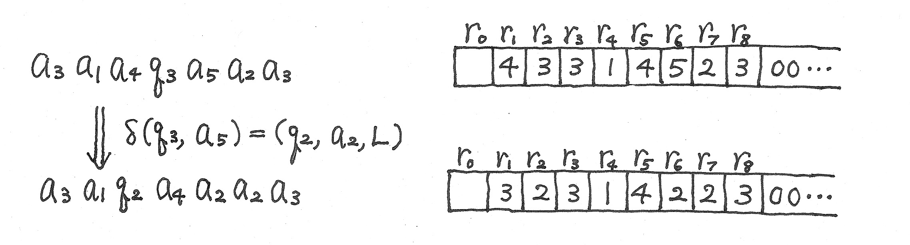

CS 722 Fall 2017
Homework Assignment #1
Solutions
In all questions "_" is the blank symbol.
-
The following is a 1-tape DTM that decides { 0m#0n | 0 ≤ m ≤ n },
Σ = { 0, # }, Γ = { 0, #, x, _ }.
For brevity of the diagram, qreject and all transitions leading to qreject are omitted;
any transition δ(q, s) not shown in the diagram is understood to be δ(q, s) = (qreject, s, R).
Description of the algorithm
The string to the left of "#" (originally 0m) will be called the left part,
and the string to the right of "#" (originally 0n) will be called the right part.
The overall idea is to repeatedly cross off the leading 0 of the left part and the leading 0 of the right part.
If the input is 0m#0n, m ≤ n, the tape string will reach the form
xm#xm0n−m, and accept.
If the input is 0m#0n, m > n, the tape string will reach the form
xn0m−n#xn, and reject.
- Cross off the first 0 of left part by x (q0 → q1).
- Skip the following 0's (q1 → q1).
- Detect # (q1 → q2).
- Skip the following x's (q2 → q2).
If 0 is not found in q2,
then the current configuration is xn+10m−n−1#xnq2_, m−n > 0,
meaning the input is 0m#0n, m > n, hence reject.
- Cross off the first 0 of right part by x (q2 → q3).
- Move the tape head leftward by skipping x's (q3 → q3),
then detecting # (q3 → q4),
then skipping 0's (q4 → q4),
until the rightmost x in the left part is found (q4 → q0).
If no 0's remain in the left part and the rightmost x is immediately followed by #,
the current configuration is in the form xmq0#xm0n−m, n−m ≥ 0, provided
the input is in the form 0m#0n, m ≤ n.
Enter q5 and check the string is actually in this form without extra #'s, and accept.
This last checking will reject inputs like ##, 0#0#, 0#00##, etc.
Otherwise, go to step 1 and repeat.
- Show the transition sequence on each of the following inputs:
- #
q0# |−
#q5_ |−
#_qaccept_
- #0
q0#0 |−
#q50 |−
#0q5_ |−
#0_qaccept_
- 00#0
q000#0 |−
xq10#0 |−
x0q1#0 |−
x0#q20 |−
x0q3#x |−
xq40#x |−
q4x0#x |−
xq00#x |−
xxq1#x |−
xx#q2x |−
xx#xq2_ |−
xx#x_qreject_
- 00#00
q000#00 |−
xq10#00 |−
x0q1#00 |−
x0#q200 |−
x0q3#x0 |−
xq40#x0 |−
q4x0#x0 |−
xq00#x0 |−
xxq1#x0 |−
xx#q2x0 |−
xx#xq20 |−
xx#q3xx |−
xxq3#xx |−
xq4x#xx |−
xxq0#xx |−
xx#q5xx |−
xx#xq5x |−
xx#xxq5_ |−
xx#xx_qaccept__
- Analyze the worst-case time complexity function of the above DTM and express it in O(f(n)) asymptotic notation
where n is the length of the input string.
The runtime of each iteration is O(m), and the total number of iterations is O(min(m, n)) since
the loop terminates when the left or right part is all crossed off.
The last scan after entering q5 takes O(n) time.
Thus the total runtime is O(m × min(m, n)) + O(n).
In terms of k = m+n, we get an upper bound O(k × k) + O(k) = O(k2).
-
Consider the NTM in
Question 3 here.
- Give the exact number of branches of the computation tree on input string
0n, n ≥ 0.
Justify your answer.
The NTM scans the input 0n from left to tight, nondeterministically replacing a 0 by
a1 or a2, or ending the replacement process by transiting to qaccept.
Each branch therefore uniquely writes a string x ∈ {a1, a2}* with
0 ≤ |x| ≤ n.
Hence the number of branches is the total number of such strings x:
Σ 0 ≤ i ≤ n (total # of strings x with |x| = i) =
Σ 0 ≤ i ≤ n 2i =
2n+1 − 1
- Give the exact worst-case time complexity function, WM(n), of this NTM.
Justify your answer.
The worst case occurs when the NTM writes any string x with |x| = n.
In this case, one of the nondeterministic transitions
δ(q0, 0) = { (q0, a1, R), (q0, a2, R) }
is used n times, then the transition
δ(q0, _) = (qaccept, _, R) leads to an accepting configuration.
The length of all such branches is n+1.
Hence, WM(n) = n+1.
- Modify this NTM to one which, given an input 0n (n ≥ 0), nondeterministically writes a string x
∈ {a1, …, ak}* such that 0 ≤ |x| ≤ n.
Σ = { 0 },
Γ = { 0, a1, …, ak, _ },
Q = { q0, qaccept }, and
δ(q0, 0) = { (q0, a1, R), …, (q0, ak, R), (qaccept, 0, R) }
δ(q0, _) = { (qaccept, _, R) }
-
-
In sufficient detail, concisely describe a 3-tape DTM that computes ⌊m / n⌋ where m, n are non-negative
integers in unary notation.
The values of m, n are initially placed on tape 1, 2 respectively, and
the value of ⌊m / n⌋ is to be written on tape 3.
No need to give a transition function/diagram.
The value of ⌊m / n⌋ is the number of 0n substrings contained in 0m.
The following example algorithm counts this number.
Write "_" in the first cell of tape 2 and move head to right; this is to detect the leftmost cell of tape 2.
Repeat the following;
the algorithm terminates as soon as "_" is read on tape 1 at any point.
- Move the heads of tape 1 and 2 to right in parallel until "_" is read on tape 2.
- Append 0 on tape 3.
- Move the head of tape 1 to right and the head of tape 2 to left in parallel until "_" is read in the leftmost cell of tape 2.
- Append 0 on tape 3.
- Go to step 1.
-
Illustrate the operation of your DTM by examples of ⌊8 / 4⌋ and ⌊10 / 4⌋.
The tape head positions are indicated by symbols in red.
start configuration for ⌊8 / 4⌋
tape 1: 00000000
tape 2: 0000
tape 3: empty
blank the leftmost cell of tape 2
tape 1: 00000000
tape 2: _000
tape 3: empty
step 1
tape 1: 00000000
tape 2: _000_
tape 3: empty
step 2
tape 1: 00000000
tape 2: _000_
tape 3: 0
step 3
tape 1: 00000000
tape 2: _000_
tape 3: 0
step 4
tape 1: 00000000
tape 2: _000_
tape 3: 00
step 1, algorithm terminates
tape 1: 00000000_
tape 2: _000_
tape 3: 00
start configuration for ⌊10 / 4⌋
tape 1: 0000000000
tape 2: 0000
tape 3: empty
blank the leftmost cell of tape 2
tape 1: 0000000000
tape 2: _000
tape 3: empty
step 1
tape 1: 0000000000
tape 2: _000_
tape 3: empty
step 2
tape 1: 0000000000
tape 2: _000_
tape 3: 0
step 3
tape 1: 0000000000
tape 2: _000_
tape 3: 0
step 4
tape 1: 0000000000
tape 2: _000_
tape 3: 00
step 1, algorithm terminates
tape 1: 0000000000_
tape 2: _000_
tape 3: 00
-
Analyze the worst-case time complexity function of your DTM in terms of k = m + n and
express it in O(f(k)) asymptotic notation.
The algorithm scans 0m on tape 1 from left to right and terminates as soon as "_" is read;
this takes O(m) time.
The number of 0's appended on tape 3 is ⌊m / n⌋, which takes time O(m/n) in total.
The worst-case runtime is therefore O(m) + O(m/n) ≤ O(m) + O(m) = O(m).
In terms of k = m + n, we have an upper bound O(k).
-
This question is about the simulation of multi-tape DTMs by 1-tape DTMs.
Consider the following configuration of a 3-tape DTM with Γ = {a, b, c, _}:

- Give the 1-tape DTM configuration simulating the above configuration.
- Give the 1-tape DTM configuration simulating the configuration obtained by
the 3-tape DTM transition
δ(qi, b, c, c) = (qj, a, b, a, L, R, R) from the above configuration.

-
Recall the simulation of DTMs by RAMs described in class.
- Give the RAM memory configuration simulating
a3a1a4q3a5a2a3.
- Give the RAM memory configuration simulating the configuration obtained by the transition
δ(q3, a5) = (q2, a2, L) from the above configuration.

-
Recall the simulation of RAMs by multi-tape DTMs described in class.
Show the contents of tape 1 (simulating the RAM memory) and tape 2 (simulating the accumulator r0) after
the execution of each instruction in the following RAM program:
Load =3
Store 3
Add 3
Store 2
Sub =2
Store 1
Mult 3
Store 2
Presume that tape 1 is initially empty.
Use a format similar to
Question 5 on this page, and
abbreviate integers in unary notation to decimal notation.
Load =3
tape 1: empty
tape 2: 3
Store 3
tape 1: ##3#3##
tape 2: 3
Add 3
tape 1: ##3#3##
tape 2: 6
Store 2
tape 1: ##3#3##2#6##
tape 2: 6
Sub =2
tape 1: ##3#3##2#6##
tape 2: 4
Store 1
tape 1: ##3#3##2#6##1#4##
tape 2: 4
Mult 3
tape 1: ##3#3##2#6##1#4##
tape 2: 12
Store 2
tape 1: ##3#3##2#12##1#4##
tape 2: 12
-
A DTM with a bidirectionally infinite tape is identical to the DTMs
with unidirectionally infinite tapes we defined and studied, except that
its tape extends infinitely in both left and right directions.
Initially, the input string is placed in a segment of the tape and the tape head is reading
the leftmost symbol of the input.
Informally but in sufficient detail,
describe how to simulate such a DTM by a DTM with a unidirectionally infinite tape.
The initial tape head position of the bidirectional tape